Section 3.4 Slope
In Section 3, we saw that a steady, constant rate of change between points means there is a linear relationship between \(x\) and \(y\text{.}\) A steady, constant rate of change has a special name, slope, and we’ll explore slope more in this section.
Subsection 3.4.1 What is slope?
Given a graph with points plotted, when the rate of change from one point to the next one never changes, those points must all be on a straight line as in Figure 2. Instead of saying “steady, constant rate of change”, there is a special word for this.

Definition 3.4.3. Slope.
When \(x\) and \(y\) are two variables where the rate of change between any two points is the same no matter which two points are used, we call this common rate of change the slope. Since having a constant rate of change means the graph will be a straight line, it’s also called the slope of the line.
Considering the definition for rate of change, this means that when \(x\) and \(y\) are two variables where the rate of change between two points is always the same, then you can calculate slope, \(m\text{,}\) by finding two distinct data points \((x_1,y_1)\) and \((x_2,y_2)\text{,}\) and calculating
\begin{equation}
m=\frac{\text{change in $y$}}{\text{change in $x$}}=\frac{\Delta y}{\Delta x}=\frac{y_2-y_1}{x_2-x_1}\text{.}\tag{3.4.1}
\end{equation}
Aside: Slope \(m\).
A slope is a rate of change. So if there are units for the horizontal and vertical variables, then there will be units for the slope. The slope will be measured in \(\frac{\text{vertical units}}{\text{horizontal units}}\text{.}\) If the slope is nonzero, we say that there is a linear relationship between \(x\) and \(y\text{.}\) When the slope is \(0\text{,}\) we say that \(y\) is constant with respect to \(x\text{.}\)
Here are some scenarios with different slopes. As you read each scenario, note how a slope is more meaningful with units.
-
If a tree grows \(2.5\) feet every year, its rate of change in height is the same from year to year. So the height and time have a linear relationship where the slope is 2.5 ft⁄yr.
-
If a company loses \(2\) million dollars every year, its rate of change in reserve funds is the same from year to year. So the company’s reserve funds and time have a linear relationship where the slope is \(-2\) million dollars per year.
-
If Sakura is an adult who has stopped growing, her rate of change in height is the same from year to year—it’s zero. So the slope is 0 in⁄yr. Sakura’s height is constant with respect to time. Since the slope is zero, we don’t say that Sakura’s height and time have a linear relationship.
Remark 3.4.4.
A useful phrase for remembering the definition of slope is “rise over run”. Here, “rise” refers to “change in \(y\)”, and “run” refers to “change in \(x\)”. Be careful. As mentioned earlier, in mathematics the horizontal direction comes first. The phrase “rise over run” might make it sound like the vertical direction comes first, but that is misleading. (It’s a bit awkward to say, but the phrase “run under rise” puts the horizontal change first.)
Example 3.4.5. Yara’s Savings.
On Dec. 31, Yara had only \(\$50\) in her savings account. For the the new year, she resolved to deposit \(\$20\) into her savings account each week, without withdrawing any money from the account. Yara keeps her resolution, and her account balance increases steadily by \(\$20\) each week. That’s a constant rate of change, so her account balance has a linear relationship with time, and the slope is \(20\, \frac{\text{dollars}}{\text{wk}}\text{.}\)
We can model the balance, \(y\) (measured in dollars) in Yara’s savings account \(x\) weeks after she started making deposits with an equation. Since Yara started with \(\$50\) and adds \(\$20\) each week, then \(x\) weeks after she started making deposits,
\begin{equation}
y = 50 + 20x\tag{3.4.2}
\end{equation}
where \(y\) is a dollar amount. Notice that the slope, \(20\,\frac{\text{dollars}}{\text{wk}}\text{,}\) is used as the multiplier for \(x\text{,}\) the number of weeks that have passed.
We can also examine Yara’s savings using a table as in Table 6.
|
\(x\text{,}\) weeks since Dec. 31 |
\(y\text{,}\) savings account balance (dollars) |
||
| \(0\) | \(50\) | ||
| increases by \(1\)\(\longrightarrow\) | \(1\) | \(70\) | \(\longleftarrow\) increases by \(20\) |
| increases by \(1\)\(\longrightarrow\) | \(2\) | \(90\) | \(\longleftarrow\) increases by \(20\) |
| increases by \(2\)\(\longrightarrow\) | \(4\) | \(130\) | \(\longleftarrow\) increases by \(40\) |
| increases by \(3\)\(\longrightarrow\) | \(7\) | \(190\) | \(\longleftarrow\) increases by \(60\) |
| increases by \(5\)\(\longrightarrow\) | \(12\) | \(290\) | \(\longleftarrow\) increases by \(100\) |
In first rows of the table, we see that when \(x\) increases by \(1\) (week), then \(y\) increases by \(20\) (dollars). The row-to-row rate of change is \(\frac{20\,\text{dollars}}{1\,\text{wk}} = 20\,\frac{\text{dollars}}{\text{wk}}\text{,}\) which we already know is the slope. In any table showing a linear relationship, whenever \(x\) increases by \(1\) unit, \(y\) will increase by the slope.
In later rows, notice that the change in \(x\) is larger than \(1\text{,}\) but the change in \(y\) is also larger than \(20\text{.}\) The changes in \(y\) have grown proportionally with the changes in \(x\) and this keeps the rate of change steady. Looking in particular at the last two rows of the table, we see \(x\) increases by \(5\) and \(y\) increases by \(100\text{,}\) which gives a rate of change \(\frac{100\,\text{dollars}}{5\,\text{wk}} = 20\,\frac{\text{dollars}}{\text{wk}}\text{,}\) which is once again the value of the slope.
On a graph of Yara’s savings, we can “see” the rates of change between consecutive rows of the table by using slope triangles. These are right triangles showing how to move horizontally, then vertically, to get from one point to another.

The large slope triangle indicates that when \(5\) weeks pass, Yara saves \(\$100\text{.}\) This is the rate of change between the last two rows of the table, \(\frac{100}{5} = 20 \, \frac{\text{dollars}}{\text{wk}}\text{.}\) The smaller slope triangles indicate, from left to right, the rates of change \(\frac{20\,\text{dollars}}{1\,\text{wk}}\text{,}\) \(\frac{20\,\text{dollars}}{1\,\text{wk}}\text{,}\) \(\frac{40\,\text{dollars}}{2\,\text{wk}}\text{,}\) and \(\frac{60\,\text{dollars}}{3\,\text{wk}}\) respectively. All of these rates simplify to the slope, \(20 \, \frac{\text{dollars}}{\text{wk}}\text{.}\)
Every slope triangle on the graph of Yara’s savings has the same angles even though some are larger than others. Since the ratio of vertical change to horizontal change is always \(20\, \frac{\text{dollars}}{\text{wk}}\text{.}\) On any graph of any sloped line, we can draw a slope triangle and compute slope as “rise over run”.
Note 3.4.8. Slope Triangles Above.
Of course, we could draw a slope triangle on the top side of a line. This slope triangle works just as well for identifying “rise” and “run”, but it emphasizes vertical change before horizontal change. For consistency with mathematical conventions, we will usually draw slope triangles that show the horizontal change first, followed by the vertical change, as in Figure 7.

Example 3.4.10.
The following graph of a line models the amount of gas, in gallons, in Kiran’s gas tank as they drive their car. Find the line’s slope, and interpret its meaning in this context.

Explanation.
To find a line’s slope using its graph, we first identify two points on it and then draw a slope triangle. Naturally, we would want to choose two points whose \(x\)- and \(y\)-coordinates are easy to identify exactly based on the graph. We choose the two points where \(x=3\) and \(x=6\text{,}\) because they are right on grid line crossings:

Notice that the change in \(y\) is negative, because the amount of gas is decreasing. Since we chose points with integer coordinates, we can easily calculate the slope:
\begin{equation*}
\text{slope}=\frac{-2\,\text{gallons}}{3\,\text{hours}}=-\frac{2}{3}\,\frac{\text{gal}}{\text{h}}\text{.}
\end{equation*}
In the given context, this slope implies gas in the tank is decreasing at the rate of \(\frac{2}{3}\) gal⁄h. Since this slope is written as a fraction, another way to understand it is that Kiran is using \(2\) gallons of gas every \(3\) hours.
Checkpoint 3.4.13.
Find the slope of the line.
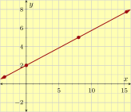
Explanation.
To find the slope of a line from its graph, we first need to identify two points that the line passes through. It is wise to choose points with integer coordinates. For this problem, we choose \({\left(0, 2\right)}\) and \({\left(8, 5\right)}\text{.}\)
Next, we sketch a slope triangle and find the rise and run. In the sketch below, the rise is \(3\) and the run is \(8\text{.}\)
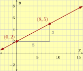
\begin{equation*}
\text{slope}=\frac{\text{rise}}{\text{run}}=\frac{3}{8}
\end{equation*}
This line’s slope is \({{\frac{3}{8}}}\text{.}\)
Checkpoint 3.4.14.
Make a table and plot the equation \(y=\frac{3}{4}x+2\text{,}\) which makes a straight line. Use the plot to determine the slope of this line.
Explanation.
First, we choose some \(x\)-values to make a table, and compute the corresponding \(y\)-values.
| \(x\) | \(y=\frac{3}{4}x+2\) | Point |
| \(-2\) | \(\frac{3}{4}(-2)+2=0.5\) | \((-2,0.5)\) |
| \(-1\) | \(\frac{3}{4}(-1)+2=1.25\) | \((-1,1.25)\) |
| \(0\) | \(\frac{3}{4}(0)+2=2\) | \((0,2)\) |
| \(1\) | \(\frac{3}{4}(1)+2=2.75\) | \((1,2.75)\) |
| \(2\) | \(\frac{3}{4}(2)+2=3.5\) | \((2,3.5)\) |
| \(3\) | \(\frac{3}{4}(3)+2=4.25\) | \((3,4.25)\) |
| \(4\) | \(\frac{3}{4}(4)+2=5\) | \((4,5)\) |
| \(5\) | \(\frac{3}{4}(5)+2=5.75\) | \((5,5.75)\) |
This table lets us plot the graph and identify a slope triangle that is easy to work with.
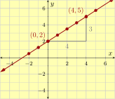
Since the slope triangle runs \(4\) units and then rises \(3\) units, the slope is \(\frac{3}{4}\text{.}\)
Subsection 3.4.2 Comparing Slopes
It’s useful to understand when more than one line having different slopes appear on the same coordinate system.
Example 3.4.15.
Effie, Ivan and Cleo are in a foot race. Figure 16 models the distance each has traveled in the first few seconds. Each runner takes a second to accelerate up to their running speed, but then runs at a constant speed. So they are then traveling with a constant rate of change, and the straight line portions of their graphs have a slope. Find each line’s slope, and interpret its meaning in this context. What comparisons can you make with these runners?

We will draw slope triangles to find each line’s slope.


Using the slope equation, we have:
-
Effie’s slope is \(\frac{8\,\text{m}}{3\,\text{s}}\approx2.666\,\frac{\text{m}}{\text{s}}\text{.}\)
-
Ivan’s slope is \(\frac{7\,\text{m}}{2\,\text{s}}=3.5\,\frac{\text{m}}{\text{s}}\text{.}\)
-
Cleo’s slope is \(\frac{8\,\text{m}}{2\,\text{s}}=4\,\frac{\text{m}}{\text{s}}\text{.}\)
In a distance-over-time graph, the slope of a line represents speed. The slopes in these examples and the running speeds of these runners are measured in m⁄s. A relationship we can see is that the more steeply a line is slanted, the larger the slope is. This should make sense because for each passing second, the faster runner travels farther, making a slope triangle’s height taller. This means that we can tell that Cleo is the fastest runner (and Effie is the slowest) just by comparing the slopes \(4>3.5>2.666\text{.}\)
Checkpoint 3.4.18. Jogging on Mt. Hood.
Kato is training for a race up the slope of Mt. Hood, from Sandy to Government Camp, and then back. The graph models his elevation from his starting point as time passes. Find the slopes of the three line segments and interpret their meanings in this context.

(a)
What is the slope of the first segment?
Explanation.
The first segment started at \((0,0)\) and stopped at \((7,3500)\text{.}\) This implies Kato started at the starting point, traveled \(7\) hours and reached a point \(3500\) feet higher in elevation from the starting point. The slope of the line is
\begin{equation*}
\frac{\Delta y}{\Delta x}=\frac{3500\,\text{ft}}{7\,\text{h}}=500\,\frac{\text{ft}}{\text{h}}
\end{equation*}
In context, Kato was gaining \(500\) feet in elevation per hour.
(b)
What is the slope of the second segment?
Explanation.
What happened in the second segment, which started at \((7,3500)\) and ended at \((19,3500)\text{?}\) This implies he started this portion \(3500\) feet high, and didn’t change elevation for \(19\) hours. Maybe some of that time he was running at a constant elevation, and some of that time he was resting.
\begin{equation*}
\frac{\Delta y}{\Delta x}=\frac{0\,\text{ft}}{12\,\text{h}}=0\,\frac{\text{ft}}{\text{h}}
\end{equation*}
In context, Kato was running but neither gaining nor losing elevation.
(c)
What is the slope of the third segment?
Explanation.
The third segment started at \((19,3500)\) and stopped at \((23,0)\text{.}\) This implies Kato started this part of his trip from \(3500\) feet high, traveled for \(4\) hours, and returned to the starting elevation. The slope of the line is
\begin{equation*}
\frac{\Delta y}{\Delta x}=\frac{-3500\,\text{ft}}{4\,\text{h}}=-875\,\frac{\text{ft}}{\text{h}}
\end{equation*}
In context, Kato was dropping in elevation by \(875\) feet per hour.
Some important properties are demonstrated in Checkpoint 18.
Fact 3.4.19. The Relationship Between Slope and Increase/Decrease.
In a linear relationship, as the \(x\)-value increases (in other words as you read its graph from left to right):
-
if the \(y\)-values increase (in other words, the line goes upward), its slope is positive.
-
if the \(y\)-values decrease (in other words, the line goes downward), its slope is negative.
-
if the \(y\)-values don’t change (in other words, the line is flat, or horizontal), its slope is \(0\text{.}\)
These properties are summarized graphically in Figure 20.


Subsection 3.4.3 Finding Slope by Two Given Points
Several times in this section we computed a slope by drawing a slope triangle. That’s not necessary if you already have coordinates for two points on a line. In fact, sometimes it’s not practical to draw a slope triangle. (For instance if you only have specific information about two points that are too close together to draw a triangle, or if you cannot clearly see precise coordinates where you might start and stop your slope triangle.) Here we will show how to find a line’s slope without drawing a slope triangle.
Example 3.4.21.
Your neighbor planted a sapling from a local nursery in his front yard several years ago. Ever since then, it has been growing at a constant rate. By the end of the third year, the tree was 15 ft tall. By the end of the sixth year, the tree was 27 ft tall. What’s the tree’s rate of growth (i.e. the slope)?
We could sketch a graph for this scenario, and include a slope triangle. If we did that, it would look like:

By the slope triangle and (3.4.1) we have:
\begin{align*}
\text{slope}=m\amp =\frac{\Delta y}{\Delta x}\\
\amp =\frac{12\,\text{ft}}{3\,\text{yr}}\\
\amp =4\frac{\text{ft}}{\text{yr}}
\end{align*}
So the tree is growing at a rate of 4 ft⁄yr
But hold on. Did we really need this picture? The “rise” of \(12\) came from a subtraction of two \(y\)-values: \(27-15\text{.}\) And the “run” of \(3\) came from a subtraction of two \(x\)-values: \(6-3\text{.}\)
Here is a picture-free approach. We know that after 3 yr, the height is 15 ft. As an ordered pair, that information gives us the point \((3,15)\) which we can label as \((\overset{x_1}{3},\overset{y_1}{15})\text{.}\) Similarly, the background information tells us to consider \((6,27)\text{,}\) which we label as \((\overset{x_2}{6},\overset{y_2}{27})\text{.}\) Here, \(x_1\) and \(y_1\) represent the first point’s \(x\)- and \(y\)-values, and \(x_2\) and \(y_2\) represent the second point’s \(x\)- and \(y\)-values.
Now we can write an alternative to (3.4.1):
\begin{equation}
\text{slope}=m=\frac{\Delta y}{\Delta x}=\frac{y_2-y_1}{x_2-x_1}\tag{3.4.3}
\end{equation}
This is known as the slope formula. The following graphs help to understand why this formula works. Basically, we are still using a slope triangle to calculate the slope.


Warning 3.4.24.
It’s important to use subscript instead of superscript in the slope equation, because \(y^2\) means to take the number \(y\) and square it. When we use \(y_2\text{,}\) we are saying there are at least two \(y\)-values in the conversation, and \(y_2\) is the second of them.
The beauty of the slope formula is that to find a line’s slope, we don’t need to draw a slope triangle. Let’s look at an example.
Example 3.4.25.
A line passes the points \((-5,25)\) and \((4,-2)\text{.}\) Find this line’s slope.
Explanation.
If you are new to this formula, it may help to label each number before using the formula. The two given points are:
\begin{equation*}
(\overset{x_1}{-5},\overset{y_1}{25}) \qquad (\overset{x_2}{4},\overset{y_2}{-2})
\end{equation*}
Now apply the slope formula:
\begin{align*}
\text{slope}\amp=\frac{y_2-y_1}{x_2-x_1}\\
\amp=\frac{-2-25}{4-(-5)}\\
\amp=\frac{-27}{9}\\
\amp=-3
\end{align*}
Note that we used parentheses when substituting negative numbers in \(x_1\) and \(y_1\text{.}\) This is a good habit to protect yourself from making errors with subtraction and double negatives.
Checkpoint 3.4.26.
A line passes through the points \((-18,14)\) and \((18,-16)\text{.}\) Find this line’s slope.
Explanation.
To find a line’s slope, we can use the slope formula:
\begin{equation*}
\text{slope}=\frac{y_2-y_1}{x_2-x_1}
\end{equation*}
First, we mark which number corresponds to which variable in the formula:
\begin{equation*}
(\overset{x_1}{-18},\overset{y_1}{14})\qquad(\overset{x_2}{18},\overset{y_2}{-16})
\end{equation*}
Now we substitute these numbers into the corresponding variables in the slope formula:
\begin{equation*}
\begin{aligned}
\text{slope} \amp =\frac{y_2-y_1}{x_2-x_1}\\
\amp =\frac{-16-14}{18-(-18)}\\
\amp =\frac{-30}{36}\\
\amp =\frac{-5}{6}
\end{aligned}
\end{equation*}
So the line’s slope is \(-\frac56\text{.}\)
Reading Questions 3.4.4 Reading Questions
1.
Have you memorized a formula for finding the slope between two points using their coordinates?
2.
What is an important thing to do with slope to make it more meaningful in an application problem?
3.
Drawing a slope triangle can be helpful to think about slope. But what might happen that could make it impractical to draw a slope triangle?
Exercises 3.4.5 Exercises
Skills Practice
Slope from Coordinates.
Find the slope of the line passing through the two given points.
1.
\({\left(6,29\right)}\) and \({\left(2,9\right)}\)
2.
\({\left(1,-1\right)}\) and \({\left(9,47\right)}\)
3.
\({\left(4,-7\right)}\) and \({\left(7,-16\right)}\)
4.
\({\left(8,-17\right)}\) and \({\left(4,-9\right)}\)
5.
\({\left(-8,-4\right)}\) and \({\left(1,-2\right)}\)
6.
\({\left(4,4\right)}\) and \({\left(6,5\right)}\)
7.
\({\left(-2,-7\right)}\) and \({\left(1,-15\right)}\)
8.
\({\left(-9,-4\right)}\) and \({\left(-6,-5\right)}\)
9.
\({\left(8,9\right)}\) and \({\left(26,51\right)}\)
10.
\({\left(-3,4\right)}\) and \({\left(13,16\right)}\)
11.
\({\left(1.9,-4.8\right)}\) and \({\left(5.4,-0.5\right)}\)
12.
\({\left(3.6,-4.3\right)}\) and \({\left(-5.8,0.9\right)}\)
13.
\({\left(-4,5\right)}\) and \({\left(3,5\right)}\)
14.
\({\left(9,8\right)}\) and \({\left(-9,8\right)}\)
15.
\({\left(18,446\right)}\) and \({\left(606,340\right)}\)
16.
\({\left(127,859\right)}\) and \({\left(262,66\right)}\)
17.
\({\left(-{\frac{8}{3}},-{\frac{7}{2}}\right)}\) and \({\left({\frac{8}{3}},{\frac{5}{7}}\right)}\)
18.
\({\left(-{\frac{7}{9}},{\frac{4}{3}}\right)}\) and \({\left(-{\frac{2}{5}},-{\frac{3}{4}}\right)}\)
Slope from a Graph.
Find the slope of the line given its graph.
19.
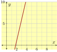
20.
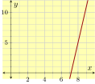
21.
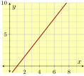
22.
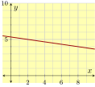
23.
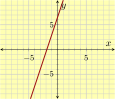
24.
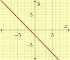
25.
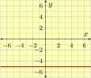
26.
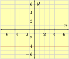
27.
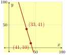
28.
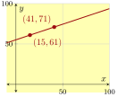
29.
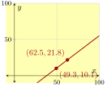
30.
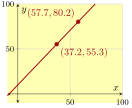
Find the Steepest.
Determine the steepest slope for a line connecting two points from the list.
31.
\({\left(1,3\right)}\text{,}\) \({\left(8,19\right)}\text{,}\) \({\left(2,18\right)}\)
32.
\({\left(4,12\right)}\text{,}\) \({\left(6,13\right)}\text{,}\) \({\left(9,19\right)}\)
33.
\({\left(-28,-28\right)}\text{,}\) \({\left(-90,-65\right)}\text{,}\) \({\left(81,81\right)}\)
34.
\({\left(-25,25\right)}\text{,}\) \({\left(90,79\right)}\text{,}\) \({\left(-70,-78\right)}\)
35.
\({\left(2.7,5.3\right)}\text{,}\) \({\left(-5,-6.6\right)}\text{,}\) \({\left(5.1,7.7\right)}\)
36.
\({\left(-3.6,2.4\right)}\text{,}\) \({\left(-3,7.4\right)}\text{,}\) \({\left(-5.5,0.3\right)}\)
Plot Slope Through a Point.
Plot a line through the given point that has the given slope.
37.
Through \({\left(3,-1\right)}\) with slope \({{\frac{3}{2}}}\text{.}\)
38.
Through \({\left(-1,-5\right)}\) with slope \({{\frac{3}{4}}}\text{.}\)
39.
Through \({\left(-2,1\right)}\) with slope \({-{\frac{3}{2}}}\text{.}\)
40.
Through \({\left(3,2\right)}\) with slope \({-{\frac{3}{4}}}\text{.}\)
Plot Slope.
Plot at least three lines that each have slope the given slope.
41.
\({{\frac{5}{3}}}\)
42.
\({{\frac{5}{4}}}\)
43.
\({-{\frac{1}{3}}}\)
44.
\({-{\frac{1}{5}}}\)
Applications
45.
Evelyn is training for a race up the slope of Mt. Hood, from Sandy to Government Camp, and then back. The graph below models her elevation from their starting point as time passes. Find the slopes of the four line segments, and interpret their meanings in this context.
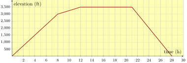
46.
Heath is learning to ski on the slopes of Mt. Hood. The graph below models his elevation from the ski park’s base as time passes during one ski run on a small hill. Find the slopes of the four line segments, and interpret their meanings in this context.

47.
A liquid solution is slowly leaking from a container. This graph shows how many milliliters \(y\) of solution remains in the container after \(x\) minutes.
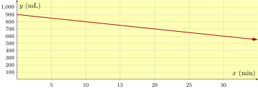
What is the slope of this line, including units?
48.
The graph plots the number of invasive cancer diagnoses in Oregon over time, and a trend-line has been drawn.
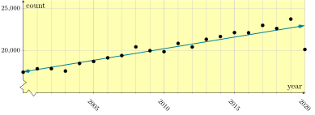
Estimate the slope of the trend-line.
Challenge
49.
True or False: A slope of \({{\frac{1}{7}}}\) is steeper than a slope of \(0.1\text{.}\)
50.
True or False: A slope of \({{\frac{5}{7}}}\) is steeper than a slope of \(0.7\text{.}\)